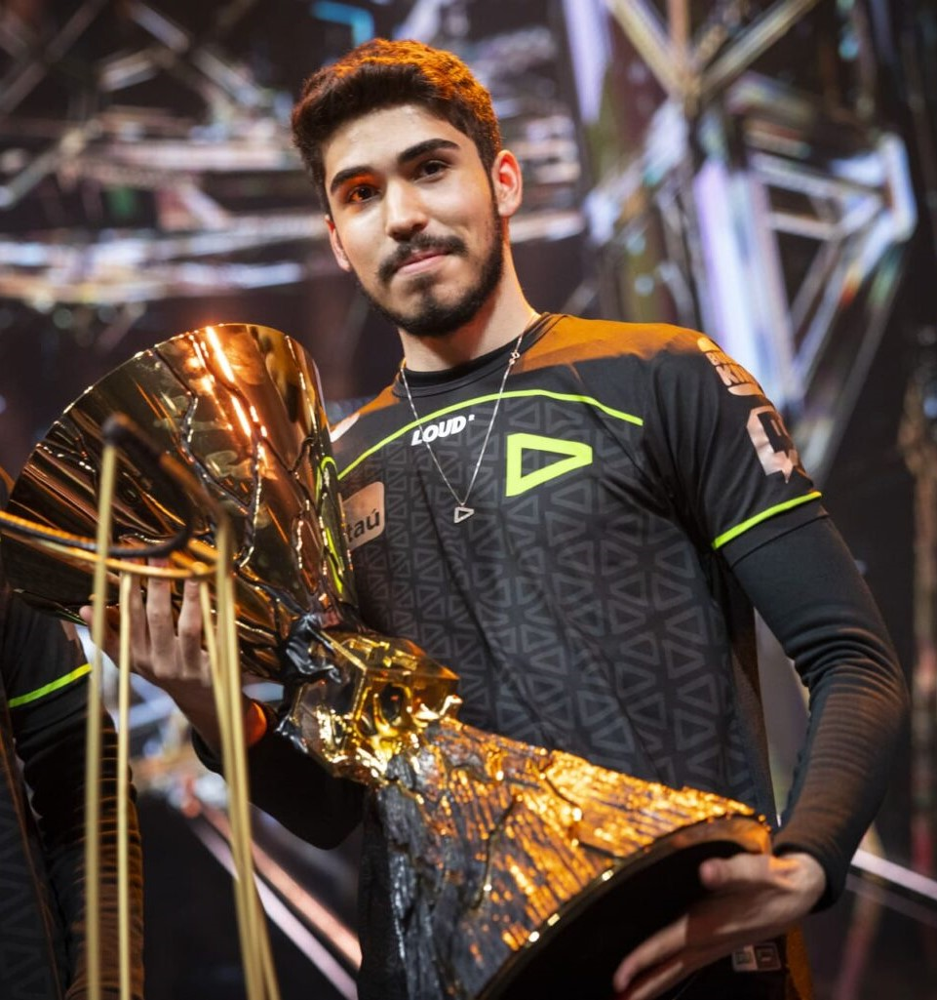

// FUNÇÃO
DUELISTA
// BIOGRAFIA
Representando a Coreia do Sul, sua terra natal, Jett tem um estilo de luta ágil e evasivo que permite que ela assuma riscos como ninguém. Ela corre em meio a qualquer confronto, cortando os inimigos antes mesmo que eles percebam quem ou o que os atingiu.

Erick “Aspas” Santos
Aspas sofreu em sua trajetória no FPS o que muitos jogadores diferenciados sofrem: ser acusado de uso de cheats. Ainda quando jogava CS:GO, em 2019, ele foi banido da plataforma Gamers Club até 2037 por “violação dos Termos de Uso”.
Já no VALORANT, foi acusado por diferentes pessoas de utilizar hacks para ter vantagens durante partidas rankeadas, inclusive pelo seu ex-companheiro de LOUD, Gustavo “Sacy” Rossi, quando ainda não atuavam juntos.
Os boatos sobre ser hacker terminaram — pelo menos no Brasil — assim que o jogador ingressou no cenário profissional do FPS da Riot Games, em março de 2021, com apenas 18 anos. Inicialmente, ele defendeu a SLICK. Apesar de todo hype em cima da aspas, o time não conseguiu conquistar títulos, e os jogadores foram dispensados em agosto do mesmo ano.
Sem uma organização, o jovem permaneceu com seus ex-companheiros de SLICK para disputar o GGPWP VALORANT Series ainda em 2021. A equipe intitulada “FOGUETE” saiu campeã do torneio, e aspas, o MVP.